Cam Chain Installation
Cam Chain InstallationNOTE:
^ Keep the cam chain away from magnetic fields.
^ Before this procedure, check that the variable valve timing control (VTC) actuator is locked by turning the VTC actuator counterclockwise. If not locked, turn the VTC actuator clockwise until it stops, then recheck it. If it is still not locked, replace the VTC actuator.
1. Set the crankshaft to top dead center (TDC). Align the TDC mark (A) on the crankshaft sprocket with the pointer (B) on the engine block.
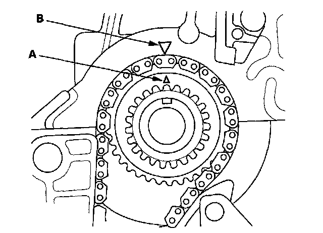
2. Set the camshafts to TDC. The punch mark (A) on the variable valve timing control (VTC) actuator and the punch mark (B) on the exhaust camshaft sprocket should be at the top. Align the TDC marks (C) on the VTC actuator and exhaust camshaft sprocket.
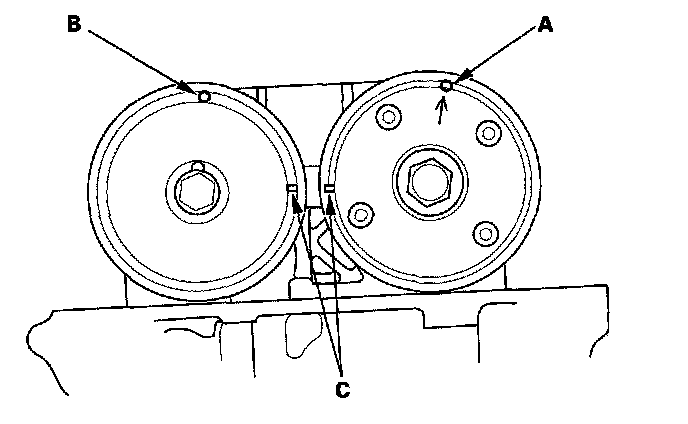
3. Install the cam chain on the crankshaft sprocket with the colored link plate (A) aligned with the mark (B) on the crankshaft sprocket.
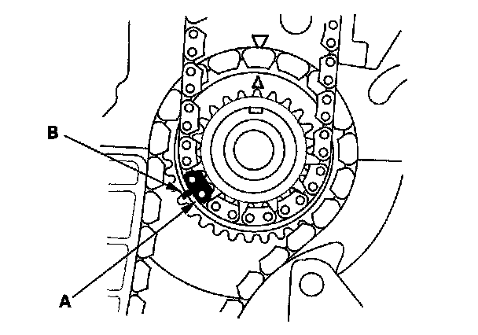
4. Install the cam chain on the VTC actuator and the exhaust camshaft sprocket with the punch marks (A) aligned with the two colored link plates (B).
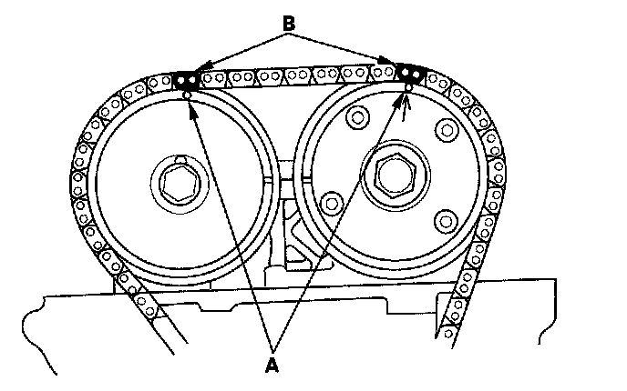
5. Install the cam chain guide A (A) and tensioner arm (B).
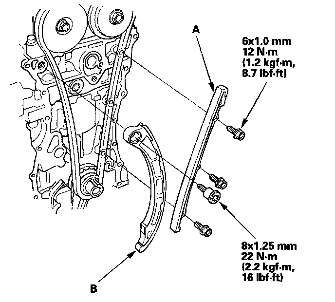
6. Install the auto-tensioner.
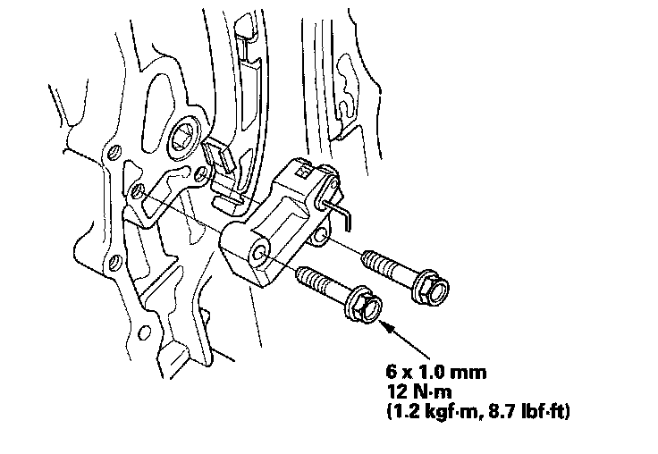
7. Install the cam chain guide B.
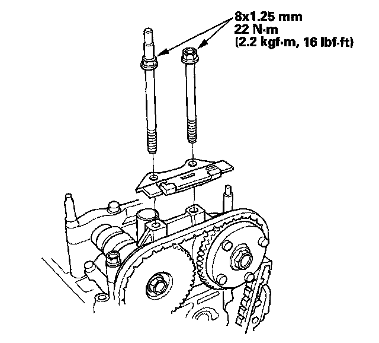
8. Remove the pin or lock pin (P/N 14511-PNA-003) from the auto-tensioner.
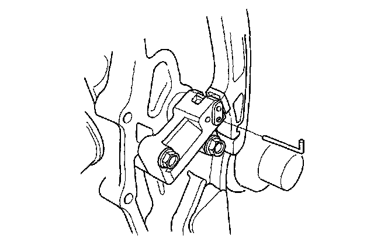
9. Check the chain case oil seal for damage. If the oil seal is damaged, replace the chain case oil seal.
10. Remove old liquid gasket from the chain case mating surfaces, bolts, and bolt holes.
11. Clean, and dry the chain case mating surfaces.
12. Apply liquid gasket, P/N 08717-0004, 08718-0001, 08718-0002, 08718-0003, or 08718-0009, evenly to the engine block mating surface of the chain case.
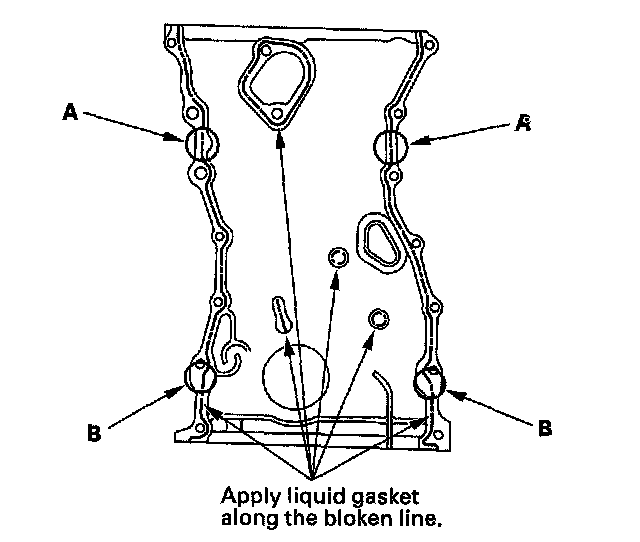
13. Apply liquid gasket to the engine block upper surface contact areas (A) on the chain case and lower block upper surface contact areas (B) on the chain case.
14. Apply liquid gasket, P/N 08717-0004, 08718-0001, 08718-0002, 08718-0003, or 08718-0009, evenly to the oil pan mating surface of the chain case.
NOTE: Do not install components if too much time has passed after applying the liquid gasket (for P/N 08718-0002, no more than 4 minutes, for all others, no more than 5 minutes). Instead, remove the old residue and reapply the liquid gasket.
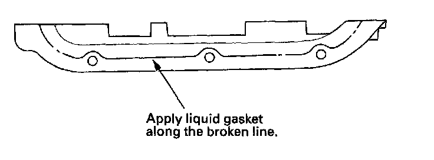
15. Install a new O-ring (A) on the chain case. Set the edge of the chain case (B) to the edge of the oil pan (C), then install the chain case on the engine block (D). Wipe off the excess liquid gasket on the oil pan and chain case mating area.
NOTE:
^ When installing the chain case, do not slide the bottom surface onto the oil pan mounting surface.
^ Wait at least 30 minutes to allow liquid gasket to cure before filling the engine with oil.
^ Do not run the engine for at least 3 hours to allow liquid gasket to cure after installing the chain case.
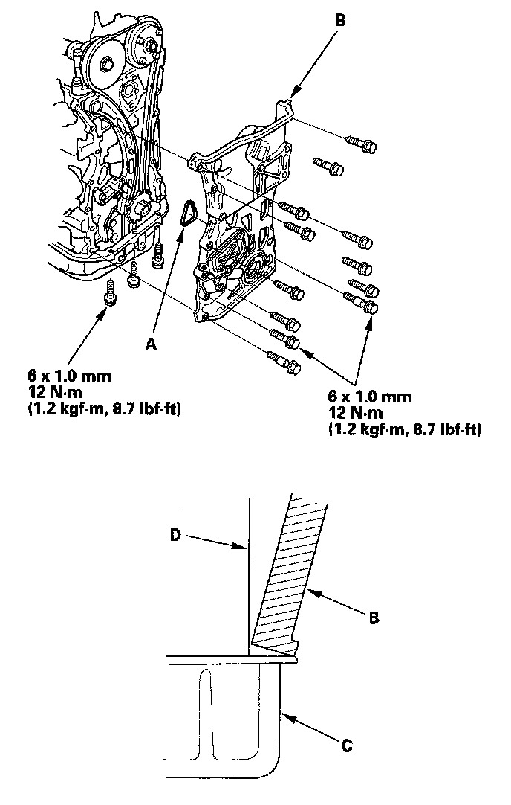
16. Install the side engine mount bracket.
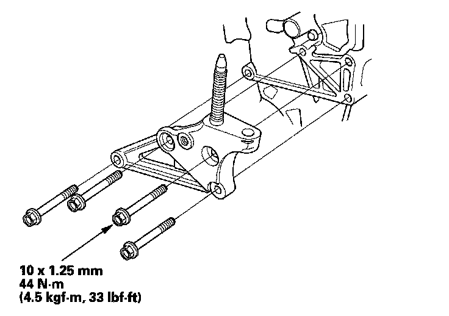
17. Install the side engine mount bracket (A), then loosely tighten the new bolt and nut (B), and loosely tighten the bolt (C).
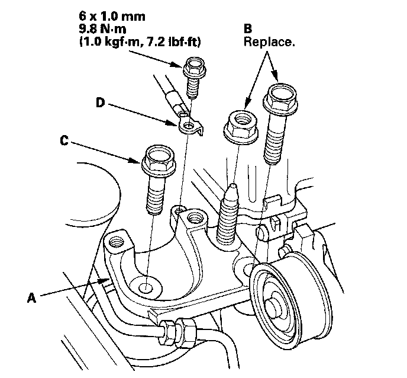
18. Install the ground cable (D).
19. Remove the air cleaner assembly.
20. Loosen the transmission mounting bolt and nuts (A).
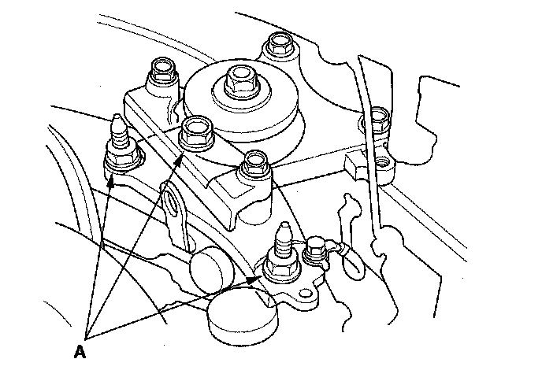
21. Raise the vehicle on the lift to full height.
22. Loosen the lower torque rod mounting bolt (A).
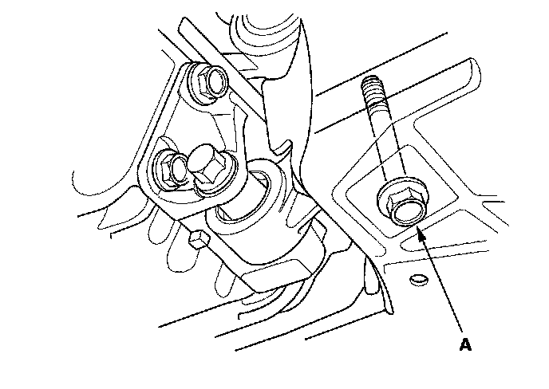
23. Loosen the front mount mounting bolt (A).
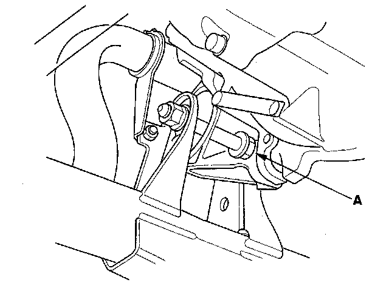
24. Lower the vehicle on the lift.
25. Tighten the side engine mount mounting bolts and nut.
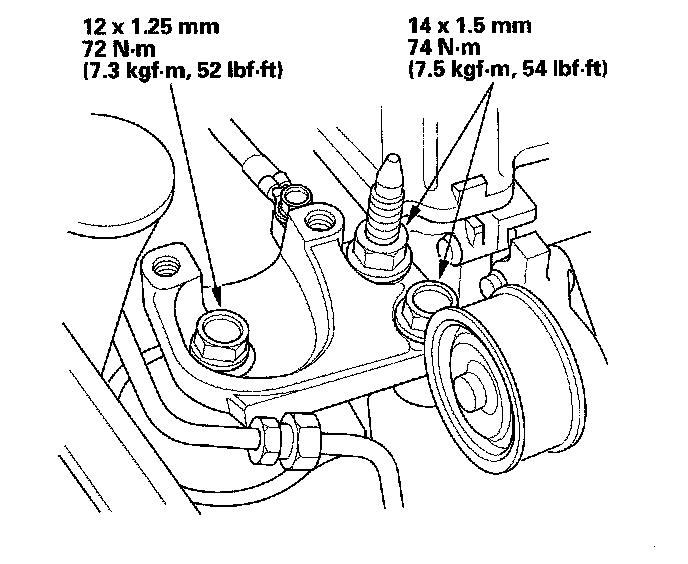
26. Tighten the transmission mounting bolt and nuts.
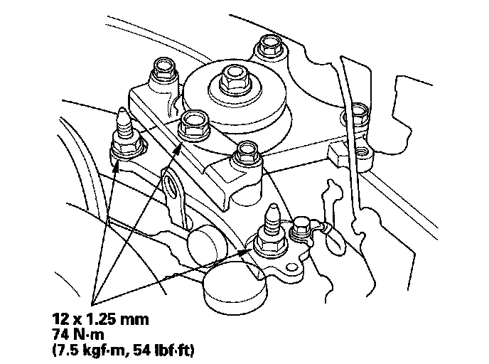
27. Raise the vehicle on the lift to full height.
28. Tighten the lower torque rod mounting bolt.
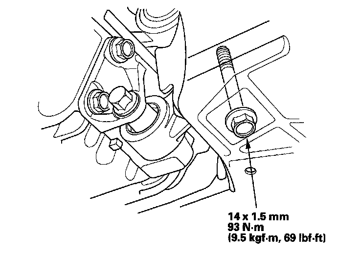
29. Lower the vehicle on the lift.
30. Install the air cleaner assembly.
31. Install the upper torque rod, then tighten the new upper torque rod mounting bolts in the numbered sequence shown.
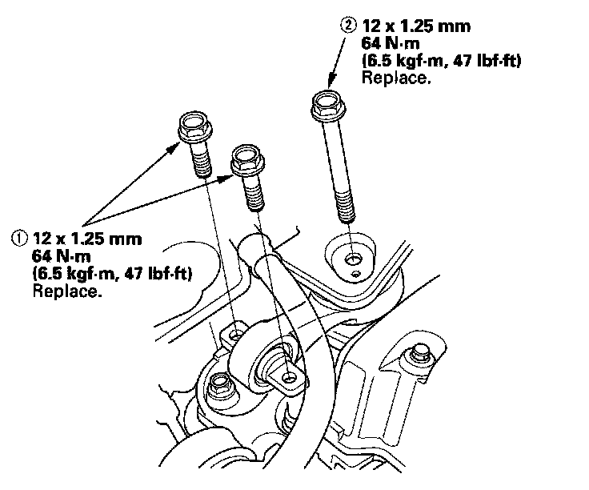
32. Raise the hoist to full height, and tighten the front mount mounting bolt.
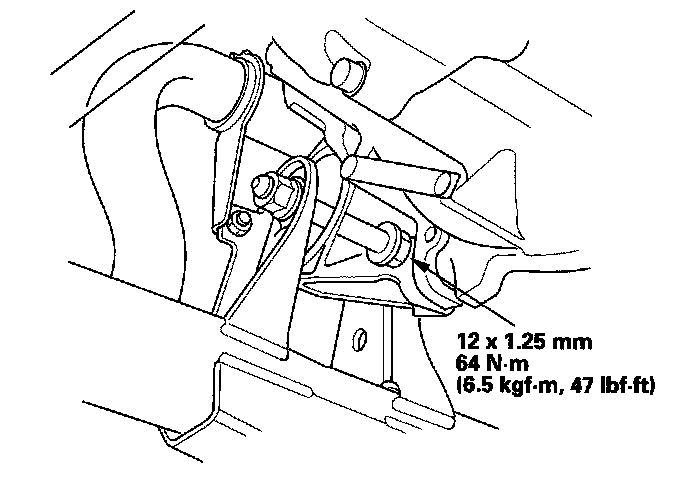
33. Install the crankshaft pulley.
34. Install the splash shield.
35. Lower the vehicle on the lift.
36. Install the variable valve timing control (VTC) oil control solenoid valve.
37. Connect the crankshaft position (CKP) sensor connector (A) and VTC oil control solenoid valve connector (B).
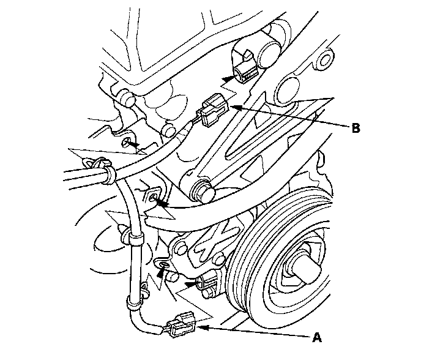
38. Install the oil cooler hose joint pipe (A) with a new O-ring (B).
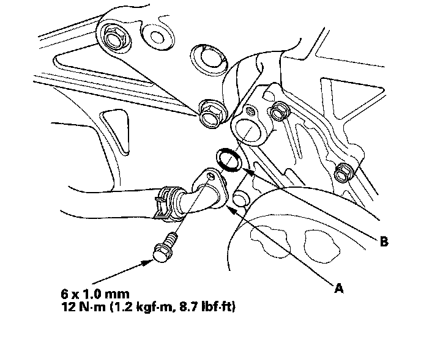
39. Install the cylinder head cover.
40. Install the drive belt.
41. Refill the radiator with engine coolant, and bleed air from the cooling system with the heater valve open.
42. Do the CKP pattern clear/CKP learn procedure.